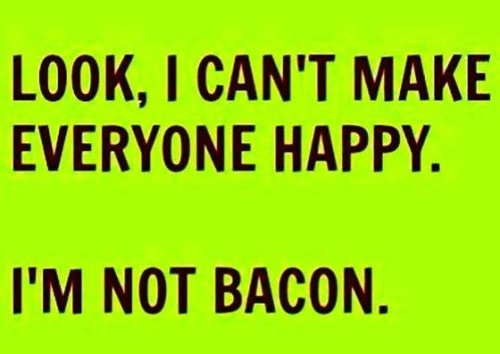

"The coyote never has a bad day. Neither does the coyote have a good day. Hungry all day is not a bad day. Napping all day full of rabbit is not a good day. Because the coyote has no judgment. He does not evaluate. No "good for me, bad for me". People are the only ones who evaluate, and they never stop. Without judgment we would become like the coyote. Our capacity to enjoy would be shrunk along with our capacity to worry. How endlessly engaging and thrilling and glorious it is to let things matter when we have finally judged that they truly don't.”
-- Fred Knipe
“Bliss is for children. Bliss is for tourists. Do you really think spiritual enlightenment is going to be like an endless orgasm? A permanent high? Heaven on earth? No more problems, no more worries, just sitting around HAPPY all the time? Doesn't that sound a little sleazy? Like all we're really doing here is trying to cop a great buzz? Bliss is just the heaven myth repackaged for a slightly hipper crowd; heaven on earth, heaven here and now. It's really too silly to talk about."
-- Jed McKenna
You experience a feeling. An emotion.
Not just a feeling but a bad feeling.
Anxiety depression shame humiliation guilt regret confusion apathy boredom.
What makes it bad?
Well, you don’t like it.
In this world, Don't Like equals bad. Whether you like what you feel or not is how you evaluate things.
--Love, happiness, compassion: good day, good happenings, more please.
--Fear, sadness, shame: bad day, bad happenings, please may it never happen again.
Life is completely owned by your likes and dislikes.
As if, when you were born, existence made some kind of promise and in this life, you (along with 8 billion others) were to be owed good feelings and good happenings, liked feelings and liked happenings. Only.
And as if, if that doesn’t happen, it’s somehow a problem.
So naturally you are obsessed with how you feel.
I mean, obsessed.
Obsessed with checking and evaluating feelings. Obsessed with sorting them into categories of liked or disliked. Obsessed with trying very hard to experience only enjoyed ones.
Which is kind of funny really. Because while you’re trying very hard to get feelings you want, you don’t actually pay much attention to them when you have them.
After all, nothing needs to be done with a good feeling. It's already good. There’s nothing that needs doing there.
Bad reactions, on the other hand, now there’s something for thought to work with.
Disliked feelings are a mind’s dream.
What caused them, what they mean about you, what they mean about your past, what they mean about your future, what to do about them, how to stop them, how to fix them, how to transform them into bliss or happiness or contentment.
Trying meditation, therapy, medication, inquiry, listening to or "sitting with" disliked feelings so that they’ll either go away forever, or shift into a more wanted experience.
All that thinking keeps mind busy and gives it a sense of existing at all.
Perhaps you can see the incentive to keep bad feelings, even while appearing and claiming to want them gone.
Perhaps you can see how focus on how the body feels, keeps thought’s attention on you, the individual person stuck with bad luck and bad sensations.
Perhaps you can see how focus on emotions might keep a person from noticing the self’s lack of reality.
The sense of who and what you are as a person is strengthened and reified by focus on what you feel, and whether you do or don’t like it.
Feelings are the go-to resort of a mind threatened by its own nothingness.
Which ironically is the opposite of what so many enlightenment chasers are hoping to attain by seeking in the first place.
After all, a major reason people want enlightenment is for the promised liked feelings of continual bliss and equanimity.
Yet the very act of trying to get better feelings manages to solidify the sense of self, by occupying the mind so thoroughly.
So is it possible that, if it somehow became no longer necessary to only experience what you like,
there might be no need to continue seeking?
Could it be that, without a demand for only liked experiences, what would be left is, “Ok, this is it, as it is, may as well experience it?”
Could likes and dislikes turn into acceptance and interesting and good enough as is?
Perhaps this may be more enlightened than the version of awakening you’ve been seeking, with its exclusion of anything other than bliss and happiness.
Feelings come.
You like them. You don’t like them.
So what.
Maybe it doesn’t matter what you feel.
This is it.
Liked or not.
And wouldn’t it be something,
or even nothing,
if it turned out that
you like that.
Liked Feelings
